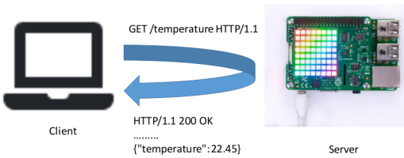
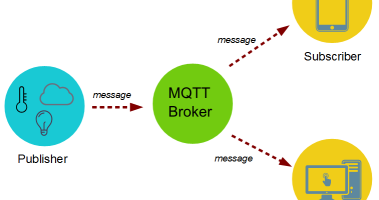

Introduction
Overview
IoT Introduction
Sensors & Data Conversion
Sensors Introduction
Data Conversion
Data Conversion Lab
Serial Comms
Serial Bus Comms
Thermistor and BME680 Temperature and Humidity Sensor
Assignment-1
Git
Git Overview
git-lab-01
Messaging and Web APIs
Web APIs & HTTP
Web APIs in IoT
MQTT and HTTP
Messaging Lab
Internet of Things Platforms
IoT Platforms
Thingspeak Lab
Wia Lab
IoT Mobile Apps
Mobile Device IoT
Blynk
Wireless Communication Networks
Bluetooth LE & 802.11 (WiFi)
Presence Detector 1
BLE
Messaging and Web APIs
Dr Frank Walsh (WIT)
Web APIs & HTTP
Web APIs in IoT

MQTT and HTTP

Messaging Lab